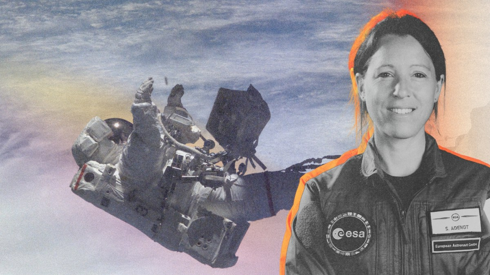

Sophie Adenot : suivez en direct sa sortie spatiale historique hors de l’ISS

🛒 En lien avec cet article
Publicité — Liens de partenariat Amazon : une commission peut être reversée, sans surcoût pour vous.
🔥 Top produits tech du moment
🛒 Voir le prix : PlayStation 5
🛒 Voir le prix : Apple Watch Series 10
Publicité — Liens de partenariat Amazon : une commission peut être reversée, sans surcoût pour vous.
L'intelligence artificielle continue de transformer en profondeur notre quotidien et l'économie. Cette annonce s'inscrit dans une dynamique où les grands acteurs accélèrent leurs investissements et leurs lancements.
Ce qu'il faut retenir
L’astronaute française Sophie Adenot et l'Américain Anil Menon vont s'aventurer ce mardi 18 août 2026 hors de la Station spatiale internationale.
Leur sortie extravéhiculaire est à suivre en direct.
Pourquoi c'est important
Cette information marque une nouvelle étape dans le développement de l'intelligence artificielle. Elle concerne directement les utilisateurs de technologies numériques et mérite d'être suivie de près dans les prochaines semaines. Sophie Adenot : suivez en direct sa sortie spatiale historique hors de l’ISS est ainsi un signal à prendre en compte pour comprendre les évolutions du secteur.
En résumé
Retenez l'essentiel : Sophie Adenot : suivez en direct sa sortie spatiale historique hors de l’ISS. Cette actualité a été rapportée par Numerama. Nous continuerons de suivre ce sujet et de vous tenir informés des prochaines évolutions.
🚀 Vous êtes freelance tech ?
Calculez votre TJM en 30 secondes : micro-entreprise, SASU, EURL ou portage salarial. Gratuit, taux 2025.
Calculer mon TJM →Source : Numerama